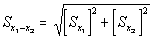

|
What is an RSE? The estimates in the Commercial Buildings Energy Consumption Survey (CBECS) are based on data reported by representatives of a statistically-designed subset of the entire commercial building population in the United States, or a "sample". Consequently, the estimates differ from the true population values. However, the sample design permits us to estimate the sampling error in each value. It is important to understand: CBECS estimates should not be considered as finite point estimates, but as estimates with some associated error in each direction. The standard error is a measure of the reliability or precision of the survey statistic. The value for the standard error can be used to construct confidence intervals and to perform hypothesis tests by standard statistical methods. Relative Standard Error (RSE) is defined as the standard error (square root of the variance) of a survey estimate, divided by the survey estimate and multiplied by 100. The 95-percent confidence range for a given survey estimate can be determined with the RSE. To calculate the 95-percent confidence range: 1. Divide the RSE by 100 and multiply by the survey estimate to determine the standard error. 2. Multiply the standard error by 1.96 to determine the confidence error. 3. The survey estimate plus or minus the confidence error is the 95-percent confidence range. For example, from Table A1, the estimate for total floorspace for all commercial buildings in the 2003 CBECS is 71,658 square feet and the estimate's RSE is 3.1 percent. The standard error is (3.1/100)*(71,658 million square feet) or 2,221 million square feet. The 95-percent confidence error is (1.96)*(2,221 million square feet), or 4,354 million square feet. Therefore, with 95 percent confidence, the true amount of floorspace in commercial buildings in the U.S. in 2003 was 71,658 plus or minus 4,354 million square feet, or, the range was from 67,304 to 76,012 million square feet.
The difference between
any two estimates given in the Detailed Tables may or may not be
statistically significant. Statistical significance is computed as:  Contacts
|
{kind=link}